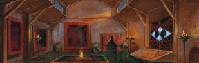
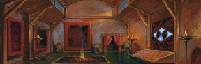

[HOME]


Teleport Prices are in direct proportion to the distance travelled. For example, a Teleport from the Temple of Ishap (near Loriel) to the Temple of Dala (nearby) will only cost you 61 Sovereigns, whereas a Teleport from the Temple of Killian to the Temple of Kahooli (far away) will cost you 184 Sovereigns. Usually a Teleport from A to B will cost the same as a Teleport from B to A. There are a few exceptions:Any Teleport
FROM the Temple of Banath, or
TO the Temple of Ishap (near Loriel), or
TO the Temple of Ruthia
will cost an additional 10 Sovereigns.Any Teleport
TO the Temple of Sung will cost an additional 5 Sovereigns.Any Teleport
TO the Temple of Astalon will cost an additional 30 Sovereigns.EXAMPLE: A Teleport FROM Banath TO Astalon will cost an additional 40 Sovereigns.
You can not teleport to or from the Temples of Guiswa and Eortis, nor the Temple of Ishap in Sarth. The Teleport function of the Shrine of Astalon won't be available until Chapter 3.
The following Teleport Price Table is ordered alphabetically. As an example, if you want to find the price of a Kahooli to Dala Teleport, you will find it under DALA. The Table should be self-explanatory: Both Basic and Adjusted prices are shown. Where no Adjustment is shown, the Basic Price will apply.
| Temple to Temple | Basic | Adjusted | Adjusted
| ASTALON - BANATH | 111 | 151
| ASTALON - DALA | 91 | 121
| ASTALON - ISHAP (Chapel) | 63 | 93
| ASTALON - ISHAP (Temple) | 89 | 119
| ASTALON - KAHOOLI | 131 | 161
| ASTALON - KILLIAN | 90 | 120
| ASTALON - LIMS-KRAGMA | 75 | 105
| ASTALON - RUTHIA | 45 | 75
| ASTALON - SILBAN | 69 | 99
| ASTALON - SUNG | 29 | 59
| ASTALON - TITH | 121 | 151
| Temple to Temple | Basic | Adjusted | Adjusted
| BANATH - DALA | 127 |
| BANATH - ISHAP (Chapel) | 110 |
| BANATH - ISHAP (Temple) | 138 |
| BANATH - KAHOOLI | 79 |
| BANATH - KILLIAN | 172 |
| BANATH - LIMS-KRAGMA | 102 |
| BANATH - RUTHIA | 102 |
| BANATH - SILBAN | 140 |
| BANATH - SUNG | 134 |
| BANATH - TITH | 87 |
| Temple to Temple | Basic | Adjusted | Adjusted
| DALA - ISHAP (Chapel) | 131 |
| DALA - ISHAP (Temple) | 61 |
| DALA - KAHOOLI | 128 |
| DALA - KILLIAN | 106 |
| DALA - LIMS-KRAGMA | 129 |
| DALA - RUTHIA | 115 |
| DALA - SILBAN | 83 |
| DALA - SUNG | 103 |
| DALA - TITH | 102 |
| Temple to Temple | Basic | Adjusted | Adjusted
| ISHAP (Chapel) - ISHAP (Temple) | 129 |
| ISHAP (Chapel) - KAHOOLI | 140 |
| ISHAP (Chapel) - KILLIAN | 158 |
| ISHAP (Chapel) - LIMS-KRAGMA | 61 |
| ISHAP (Chapel) - RUTHIA | 49 |
| ISHAP (Chapel) - SILBAN | 120 |
| ISHAP (Chapel) - SUNG | 91 |
| ISHAP (Chapel) - TITH | 129 |
| Temple to Temple | Basic | Adjusted | Adjusted
| ISHAP (Temple) - KAHOOLI | 139 | 149
| ISHAP (Temple) - KILLIAN | 75 | 85
| ISHAP (Temple) - LIMS-KRAGMA | 136 | 146
| ISHAP (Temple) - RUTHIA | 113 | 123
| ISHAP (Temple) - SILBAN | 70 | 80
| ISHAP (Temple) - SUNG | 100 | 110
| ISHAP (Temple) - TITH | 113 | 123
| Temple to Temple | Basic | Adjusted | Adjusted
| KAHOOLI - KILLIAN | 184 |
| KAHOOLI - LIMS-KRAGMA | 131 |
| KAHOOLI - RUTHIA | 131 |
| KAHOOLI - SILBAN | 152 |
| KAHOOLI - SUNG | 146 |
| KAHOOLI - TITH | 75 |
| Temple to Temple | Basic | Adjusted | Adjusted
| KILLIAN - LIMS-KRAGMA | 167 |
| KILLIAN - RUTHIA | 139 |
| KILLIAN - SILBAN | 88 |
| KILLIAN - SUNG | 107 |
| KILLIAN - TITH | 159 |
| Temple to Temple | Basic | Adjusted | Adjusted
| LIMS-KRAGMA - RUTHIA | 60 |
| LIMS-KRAGMA - SILBAN | 129 |
| LIMS-KRAGMA - SUNG | 99 |
| LIMS-KRAGMA - TITH | 124 |
| Temple to Temple | Basic | Adjusted | Adjusted
| RUTHIA - SILBAN | 101 | 111
| RUTHIA - SUNG | 71 | 81
| RUTHIA - TITH | 121 | 131
| Temple to Temple | Basic | Adjusted | Adjusted
| SILBAN - SUNG | 79 |
| SILBAN - TITH | 127 |
| Temple to Temple | Basic | Adjusted | Adjusted
| SUNG - TITH | 134 | 139
| |
|---|